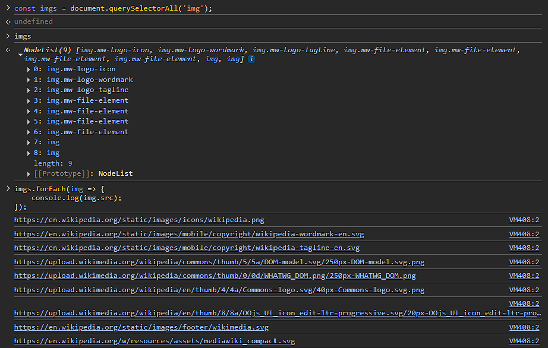

S01 – Atividade de Aprendizagem: S01: Revisão: O Document Object Model
Visão Geral
Compreender o DOM permite que os desenvolvedores construam sites interativos. Manipulando o DOM, os desenvolvedores podem atualizar dinamicamente o conteúdo da página, alterar estilos CSS, adicionar ou remover elementos e responder às interações do usuário, criando assim experiências web interativas e dinâmicas.
Preparação
O JavaScript usa o DOM para ler e modificar uma página em tempo real, sem recarregá-la. O DOM representa a estrutura de árvore lógica de um documento web. Quando um navegador carrega uma página HTML, ele analisa o HTML e cria o DOM, que pode ser acessado e manipulado com JavaScript.
Esta atividade é uma revisão dos princípios do DOM que foram apresentados nos cursos pré-requisito.
Instruções da Atividade
Nesta atividade prática, use JavaScript para interagir com uma página web fazendo raspagem de dados em busca de quaisquer <img> elementos e extrair seu conteúdo.
- Navegue até a Wikipedia – Document Object Model página.
- Abra o console do navegador através do DevTools (clique com o botão direito > Inspecionar > aba Console).
- Use o
document.querySelectorAll()método para selecionar todos os<img>elementos na página. - Use um
forEach()laço para iterar pelos elementos selecionados. - Dentro do laço, use
console.log()para exibir a saída dosrcatributo de cada<img>elemento. - Execute o código no console para revisar a saída.

Recursos Opcionais
- Document Object Model (DOM) – MDN
- DOM – javascript.info
- Árvore do DOM - javascript.info